| y | lag1_y | lag2_y | lag3_y |
|---|---|---|---|
| 1 | NA | NA | NA |
| 2 | 1 | NA | NA |
| 3 | 2 | 1 | NA |
| 4 | 3 | 2 | 1 |
| 5 | 4 | 3 | 2 |
| 6 | 5 | 4 | 3 |
| 7 | 6 | 5 | 4 |
Series Temporales: Procesos ARIMA
Máster de Bioestadística (Modelización Estadística)
1 Introducción
Los modelos ARIMA han mostrado ser uno de los métodos de ajuste de series temporales más valiosos desde que fueran formalizados en 1976 por Box y Jenkins (Box and Jenkins 1976). Además, dieron las pautas a seguir en el ajuste de una serie temporal para alcanzar buenas predicciones (véase epígrafe 5).
En este tema y el siguiente, definiremos estos procesos y aprenderemos a identificarlos, estimarlos y hacer predicciones.
Los modelos ARIMA son ahora el tronco de una amplia familia de procesos que requieren menos hipótesis para su aplicación: ARCH, GARCH, NGARCH, IGARCH, EGARCH, GARCH-M, QGARCH, GJR-GARCH, TGARCH, fGARCH…
Los modelos ARIMA y los métodos de Alisado Exponencial son complementarios:
- Los modelos de Alisado lineales son casos especiales de modelos Arima,
- Los modelos de Alisado no lineales no tienen su contrapartida en modelos Arima
- Muchos modelos Arima no tienen contrapartida en los modelos de Alisado.
2 Operador Retardo
Definimos el operador retardo \(L\) como \(Ly_t = y_{t-1}\), es decir, retrasa un periodo la serie. En inglés se denomina lag operator (L) o backward shift (B)
Así, se tiene que \[L^k y_t = y_{t-k}.\] y por tanto que
\[ \begin{aligned} \text{Una diferencia regular} & &\nabla y_t & = y_t - y_{t-1} = y_t - Ly_t = (1-L)y_t \\ d \text{ diferencias regulares} & &\nabla^d y_t & = (1-L)^d y_t \\ \text{Una diferencia estacional} & &\nabla_m y_t & = (1-L^m) y_t \\ D\text{ diferencias estacionales} & &\nabla_m^D y_t & = (1-L^m)^D y_t \end{aligned} \]
La Tabla 1 muestra un sencillo ejemplo del efecto del operador retardo sobre la serie \(y_t\)
3 Hipótesis
3.1 Sobre el proceso estocástico
A lo largo de este tema asumiremos que:
\(\{y_t\}_{t=1}^T\) es una realización de un proceso estocástico desconocido.
El proceso estocástico es estacionario en sentido amplio: \[E[y_t] = \mu < \infty \;\;\; \forall t,\] \[Cov[y_t, y_{t-k}] = \gamma_k \;\;\; \forall k.\]
El proceso estocástico es ergódico, o su condición suficiente: \[\lim_{k \rightarrow \infty} \gamma_k = 0.\]
3.2 Sobre el vector de residuos
También asumiremos que los residuos del modelo \(\{\varepsilon_t\}_{t=1}^T\) son ruido blanco:
- Media cero: \(E[\varepsilon_t]=0\)
- Varianza constante (homocedástico): \(E[\varepsilon_t^2]=\sigma^2\)
- Incorrelación: \(E[\varepsilon_t \cdot \varepsilon_{s}]=0 \;\;\; t \neq s\)
- Distribución Normal: \(\varepsilon_t \sim N\)
Es decir, \(\varepsilon_t \sim N(0,\sigma^2)\) i.i.d.
4 Procesos ARIMA
ARIMA surge de combinar las siglas de tres procesos diferentes: AR de AutoRegresive, I de Integrated y MA de Moving Average. Veamos cada uno de estos tres conceptos por separado y luego su combinación.
4.1 Procesos autorregresivos AR(p)
Definición
El modelo general autorregresivo de orden p, \(y_t \sim AR(p)\) viene definido por \[y_t=c + \phi_1 y_{t-1} + \phi_2 y_{t-2} + \ldots + \phi_p y_{t-p} + \varepsilon_t,\] que usando el operador retardo queda \[(1 - \phi_1 L - \phi_2 L^2 - \ldots - \phi_p L^p)y_t = c + \varepsilon_t\]
Propiedades
El proceso es estacionario si quedan fuera del círculo de radio la unidad todas las raíces del polinomio autorregresivo \[\Phi_p(z) = 1 - \phi_1 z - \phi_2 z^2 - \ldots - \phi_p z^p.\]
Es invertible siempre.
Podemos transformar el proceso AR(p) en un proceso donde \(y_t\) depende de la suma infinita de errores pasados, MA(\(\infty\)).
Si conocemos las p primeras autocorrelaciones, podemos estimar los p parámetros del modelo. Por ejemplo, para un proceso AR(2) se verifica que: \[\rho_1 = \phi_1 + \phi_2 \rho_1\] \[\rho_2 = \phi_1 \rho_1 + \phi_2\]
Estas ecuaciones se denominan Ecuaciones de Yule-Walker.
Observa que si tenemos una estimación de las dos primeras autocorrelaciones, estas ecuaciones nos permiten obtener una estimación de los coeficientes del proceso AR(2) como una aplicación del método de los momentos.
Sobre todo,
- La FAC del proceso decae exponencialmente a partir del orden p
- La FACP verifica que los p primeros valores son no nulos y todos los demás valen cero.
Ejemplos
\(y_t \sim AR(1): \;\;y_t = c + \phi_1 y_{t-1} + \varepsilon_t\) o \((1 - \phi_1 L)y_t = c + \varepsilon_t\)
\(y_t \sim AR(2): \;\;y_t = c + \phi_1 y_{t-1} + \phi_2 y_{t-2} + \varepsilon_t\) o \((1 - \phi_1 L - \phi_2 L^2)y_t = c + \varepsilon_t\)
Simulación de procesos autorregresivos
La Figura 1 muestra dos simulaciones del proceso AR(1) \(y_t = 0.8y_{t-1} + \varepsilon_t\), el panel superior con 20 datos y el inferior con 100 datos. En ambos casos \(\varepsilon_t\) se distribuye como una normal con media cero y varianza la unidad. (Todas las simulaciones se han realizado con la función arima.sim de la librería stats.)
4.2 Procesos en medias móviles MA(q)
Definición
El modelo general en medias móviles de orden q, \(y_t \sim MA(q)\) viene definido por \[y_t=c + \varepsilon_t + \theta_1 \varepsilon_{t-1} + \theta_2 \varepsilon_{t-2} + \ldots + \theta_q \varepsilon_{t-q},\] que usando el operador retardo queda \[y_t = c + (1 + \theta_1 L + \theta_2 L^2 + \ldots + \theta_q L^q) \varepsilon_t\]
Propiedades
El proceso es invertible si quedan fuera del círculo de radio la unidad todas las raíces del polinomio en medias móviles \[\Theta_q(z) = 1 + \theta_1 z + \theta_2 z^2 + \ldots + \theta_q z^q.\]
- Podemos transformar el proceso MA(q) en un proceso AR(\(\infty\)).
- Si conocemos las q primeras autocorrelaciones, podemos estimar los q parámetros del modelo. Por ejemplo, para un proceso MA(2) se verifica que: \[\rho_1 = \frac{\theta_1 + \theta_1\theta_2}{1 + \theta_1^2 + \theta_2^2}\] \[\rho_2 = \frac{\theta_2}{1 + \theta_1^2 + \theta_2^2}\]
Es estacionario siempre.
Sobre todo,
- La FAC verifica que los q primeros valores son no nulos y todos los demás valen cero.
- La FACP decae exponencialmente a partir del orden q.
Ejemplos
\(y_t \sim MA(1): \;\;y_t = c + \varepsilon_t + \theta_1 \varepsilon_{t-1}\) o \(y_t = c + (1 + \theta_1 L)\varepsilon_t\)
\(y_t \sim MA(2): \;\;y_t=c + \varepsilon_t + \theta_1 \varepsilon_{t-1} + \theta_2 \varepsilon_{t-2}\) o \(y_t = c + (1 + \theta_1 L + \theta_2 L^2)\varepsilon_t\)
Simulación de procesos en medias móviles
La Figura 2 ofrece dos simulaciones del proceso MA(1) \(y_t = 0.8\varepsilon_{t-1} + \varepsilon_t\), la primera con 20 datos y la segunda con 100 datos. En ambos casos \(\varepsilon_t\) se distribuye como una normal con media cero y varianza la unidad.


4.3 Procesos ARMA(p,q)
Definición
El modelo general \(y_t \sim ARMA(p,q)\) viene dado por \[y_t = c + \phi_1 y_{t-1} + \phi_2 y_{t-2} + \ldots + \phi_p y_{t-p} + \theta_1 \varepsilon_{t-1} + \theta_2 \varepsilon_{t-2} + \ldots + \theta_q \varepsilon_{t-q}+ \varepsilon_t,\] que usando el operador retardo queda \[(1 - \phi_1 L - \ldots - \phi_p L^p)y_t = c + (1 + \theta_1 L + \ldots + \theta_q L^q) \varepsilon_t.\]
El proceso más simple es el ARMA(1,1), \(y_t = c + \phi_1 y_{t-1} + \theta_1 \varepsilon_{t-1} + \varepsilon_{t}\).
Propiedades
El proceso es estacionario si quedan fuera del círculo de radio la unidad todas las raíces del polinomio \[\Phi_p(z) = 1 - \phi_1 z - \phi_2 z^2 - \ldots - \phi_p z^p.\] El proceso es invertible si quedan fuera del círculo de radio la unidad todas las raíces del polinomio \[\Theta_q(z) = 1 + \theta_1 z + \theta_2 z^2 + \ldots + \theta_q z^q.\] Sobre todo,
- La FAC decae exponencialmente a partir del orden p.
- La FACP decae exponencialmente a partir del orden q.
Ejemplos
\(y_t \sim ARMA(1, 1): \;\;y_t = c + \phi_1 y_{t-1} + \theta_1 \varepsilon_{t-1} + \varepsilon_{t}\) o \((1 - \phi_1 L)y_t = c + (1 + \theta_1 L)\varepsilon_t\).
\(y_t \sim ARMA(0, 0): \;\;y_t = c + \varepsilon_{t}\). Si \(c = 0\), a este proceso se le denomina ruido blanco.
Simulación de procesos ARMA
La Figura 3 muestra las FAC y FACP de una simulación de tamaño 200 para un proceso ARMA(1,1), donde \(\varepsilon_t\) se distribuye como una normal con media cero y varianza la unidad.
\(y_t = 0.7y_{t-1} + 0.6\varepsilon_{t-1} + \varepsilon_t\)

4.4 Proceso ARIMA(p,d,q)
Si la serie \(y_t\) no es estacionaria pero tras diferenciarla \(d\) veces se hace estacionaria, diremos que la serie es integrada de orden \(d\): \(y_t \sim I(d)\). Por tanto,
- una serie estacionaria se indicará como \(y_t \sim I(0)\)
- \(y_t \sim I(d)\) es equivalente a \(\nabla^d y_t = (1 - L)^d y_t \sim I(0)\)
Una serie \(y_t\) sigue un proceso \(ARIMA(p,d,q)\) si:
- hay que diferenciar la serie \(d\) veces para hacerla estacionaria, \(y_t \sim I(d)\); y
- la serie diferenciada sigue un proceso ARMA(p,q), \(\nabla^d y_t \sim ARMA(p,q)\).
Entonces, podemos escribir: \[\begin{equation*} \begin{array}{c@{\qquad}c@{\quad}ccc} y_t \sim ARIMA(p,d,q): & (1 - \phi_1 L - \ldots - \phi_p L^p) & (1- L)^d y_t & = & c + (1 + \theta_1 L + \ldots + \theta_q L^q) \varepsilon_t \\ & \uparrow & \uparrow & & \uparrow \\ & AR(p) & I(d) & & MA(q) \end{array} \end{equation*}\]
Ejemplos
\(y_t \sim ARIMA(0, 1, 1)\): \[ \begin{aligned} (1- L) y_t & = c + (1 + \theta_1 L) \varepsilon_t \\ y_t & = c + y_{t-1} + \theta_1 \varepsilon_{t-1} + \varepsilon_t \end{aligned} \]
\(\log(y_t) \sim ARIMA(1, 1, 0)\): \[ \begin{aligned} (1 - \phi_1 L)(1- L) \log(y_t) & = (1 - \phi_1 L)TVy_t = c + \varepsilon_t \\ TVy_t & = c + \phi_1 TVy_{t-1} + \varepsilon_t \end{aligned} \]
\(y_t \sim ARIMA(0, 1, 0)\): \[ \begin{aligned} (1- L) y_t & = c + \varepsilon_t \\ y_t & = c + y_{t-1} + \varepsilon_t. \end{aligned} \] Si \(c=0\), tenemos un paseo aleatorio; si \(c \neq 0\), tenemos un paseo aleatorio con deriva.
Simulación de procesos no estacionarios
Veamos la FAC de tres series simuladas no estacionarias (Figura 4): un paseo aleatorio, un paseo aleatorio con deriva y un modelo lineal. Sus FAC son indistinguibles, pero los tres casos revelan claramente su carácter no estacionario.


5 Aproximación de Box-Jenkins
La Figura 5 muestra el flujo de procesos asociado a la modelización por modelos ARIMA, con cuatro grandes áreas:
Identificación, que requiere primero transformar la serie para que sea estacionaria y ergódica, para después identificar los valores de p y q.
La FAC y la función de autocorrelación parcial teóricas son diferentes en cada tipo de proceso. Por tanto, idealmente estas funciones podría servir de ayuda en la identificación del modelo. En la práctica, la funciones estimadas son tan diferentes de las teóricas que resultan de muy poca ayuda.
Nosotros haremos uso de algunas funciones de auto identificación que nos ayudaran en este punto.
Estimación de los parámetros del modelo, incluidas las variables de intervención. El método usual de estimación de los parámetros es por máxima verosimilitud.
Validación de las hipótesis sobre el modelo. Analizaremos que no es necesaria más intervención y veremos la pertinencia de los parámetros del modelo (bien contrastando su significatividad o bien por alguna regla más sencilla).
Si la validación no se pasa, puede ser necesario volver al proceso inicial y realizar una nueva identificación del modelo.
Predicción e interpretación del modelo válido. Si las predicciones se alejan de los valores reales más de lo esperado o presentan sesgo, puede ser necesario identificar y estimar un nuevo modelo.

Identificación automática
El paquete forecast dispone de la función auto.arima() que localiza el mejor modelo basándose en el AIC corregido para pequeñas muestras (AICc). No hay que fiarse ciegamente de los resultados de esta función, pero ayuda en la identificación. Básicamente el algoritmo seguido es el siguiente:
- Determina el orden de diferenciación regular \(0 \leq d \leq 2\) usando la función
ndiffs, que usa la prueba KPSS repetidas veces. - Tras diferenciar la serie:
- se estiman una serie de modelos básicos predeterminados.
- se usa el criterio AICc para seleccionar el mejor de estos modelos.
- a partir del modelo seleccionado, se hacen pequeñas variaciones modificando en una unidad p y q y añadiendo/quitando la constante y se vuelve a seleccionar el mejor de los nuevos modelos.
- Se repite el paso 2 hasta que no se puede mejorar el AICc.
Cuando usemos esta función, debemos tener cuenta que:
- La función
auto.arimano permite constante si la suma de las diferenciaciones es 2 o superior. - Si se desea hacer una búsqueda exhaustiva entre todos los posibles modelos se debe usar el argumento
stepwise = FALSE. - Si se desea que el cálculo de AICc sea exacto (por defecto para ganar tiempo calcula una aproximación), se debe usar el argumento
approximation = FALSE. - Si se desea ver para todos los modelos analizados el valor de AICc, se debe incluir el argumento
trace = TRUE.
La función auto.arima tiende a sobreparametrizar los modelos y es muy recomendable ayudarla indicando las diferenciaciones y la posible intervención.
6 Ejemplos
6.1 Recogida de Residuos
Vamos a aplicar la metodología de Box-Jenkins a la serie Residuos, una serie anual de 1995 a 2023 (fuente Instituto Nacional de Estadística) que muestra los residuos recogidos por o en nombre de las autoridades municipales y eliminados a través del sistema de gestión de residuos. La unidad es el kg per cápita.
residuos <- read.csv2("./series/Residuos.csv",
header = TRUE)
residuos <- ts(residuos[, 2],
start = 1995,
frequency = 1)
autoplot(residuos,
xlab = "",
ylab = "Kg per cápita",
main = "")
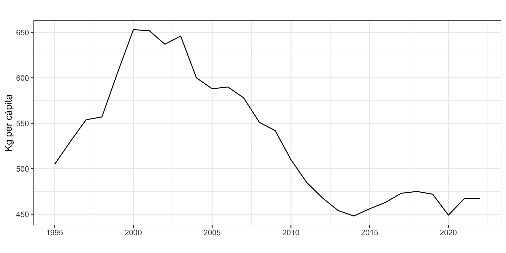
Transformación de la serie
El primer paso es transformar la serie original para que sea estacionaria. La Figura 7 muestra la gráfica temporal y la FAC para la serie original y su primera diferencia, y la función ndiffs usa un contraste de raíces unitarias para determinar el número de diferencias necesarias para que la serie sea estacionaria. Tras su análisis, podemos concluir que es necesario diferenciar la serie una vez. Es decir, \(d=1\) o \(residuos_t \sim I(1)\).
autoplot(residuos, xlab = "", ylab = "", main = "")
autoplot(diff(residuos), xlab = "", ylab = "", main = "")
ggAcf(residuos, xlab = "", ylab = "", main = "")
ggAcf(diff(residuos), xlab = "", ylab = "", main = "")
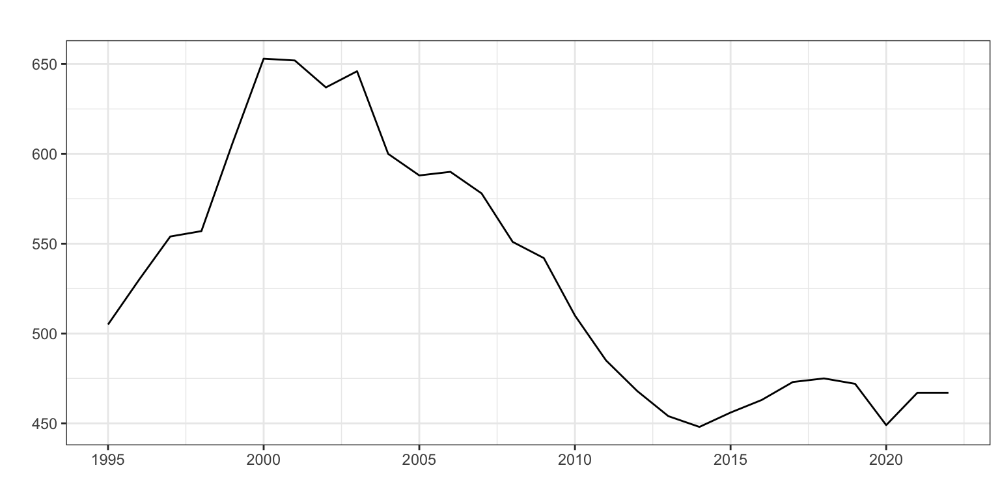
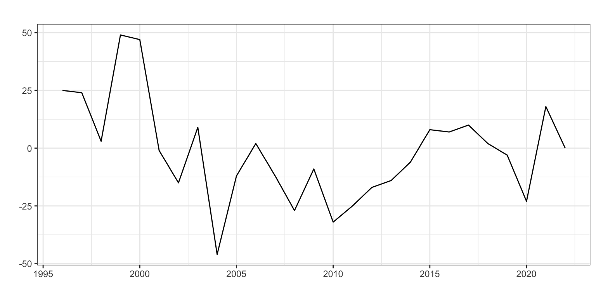
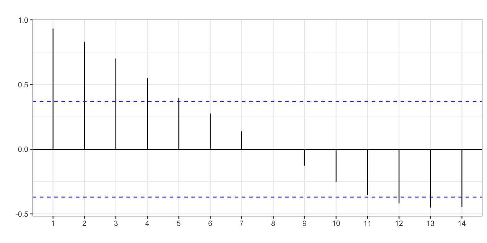
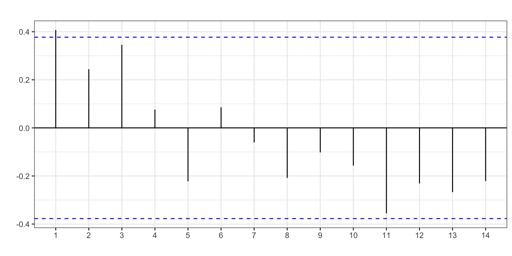
ndiffs(residuos)[1] 1Identificación
Tras diferenciar la serie, vamos a identificar los valores de \(p\) y \(q\) a partir de las FAC y FACP de la serie diferenciada (Figura 8).
ggtsdisplay(diff(residuos), main = "")
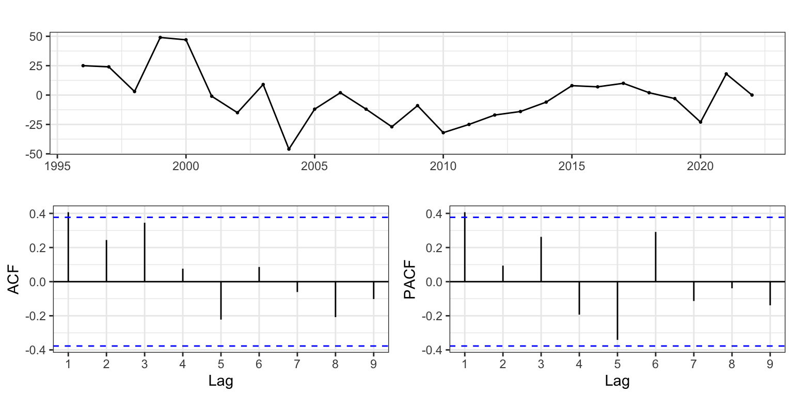
Observamos que tanto en la FAC como en la FACP solo la primera autocorrelación sobrepasa las líneas que marcan el intervalo de confianza al 95%. podemos estar ante un proceso AR(1, 1, 0), MA(1, 1, 0) o ARIMA(1, 1, 1). Si queremos hilar fino, podemos aventurar que la FAC presenta decrecimiento y apostar por un proceso ARIMA(1, 1, 0).
También podemos ayudarnos de la función auto.arima, fijando el número de diferenciaciones con d = 1. El argumento trace = TRUE sirve para que en la salida se muestren todos los modelos que se han probado.
auto.arima(residuos,
d = 1,
trace = TRUE)
ARIMA(2,1,2) with drift : 259.0007
ARIMA(0,1,0) with drift : 254.585
ARIMA(1,1,0) with drift : 251.1215
ARIMA(0,1,1) with drift : 251.5733
ARIMA(0,1,0) : 252.3874
ARIMA(2,1,0) with drift : 253.7421
ARIMA(1,1,1) with drift : 253.348
ARIMA(2,1,1) with drift : 256.7297
ARIMA(1,1,0) : 248.6339
ARIMA(2,1,0) : 251.0241
ARIMA(1,1,1) : 250.6109
ARIMA(0,1,1) : 249.1284
ARIMA(2,1,1) : 253.7815
Best model: ARIMA(1,1,0) Series: residuos
ARIMA(1,1,0)
Coefficients:
ar1
0.4494
s.e. 0.1705
sigma^2 = 368.8: log likelihood = -122.08
AIC=248.15 AICc=248.63 BIC=250.82La identificación automática da como mejor modelo \(p=1\) y \(q=0\) sin constante. Además, observa como el segundo mejor modelo (según AICc) es ARIMA(0, 1, 1) y el tercero un ARIMA(1, 1, 1).
Vamos a asumir que \(residuos_t \sim ARIMA(1,1,0)\) sin deriva (sin constante): \[ \begin{aligned} (1 - \phi_1 L)(1 - L)residuos_t & = \varepsilon_t \\ residuos_t &= residuos_{t-1} + \phi_1(residuos_{t-1} - residuos_{t-2}) + \varepsilon_t \end{aligned} \]
Estimación
Aunque existe la función arima de stats, vamos a usar la función Arima de la librería forecast para estimar el modelo identificado por ser más versátil. El argumento order indica los valores de (p, d, q) como un vector y el argumento lógico include.constant indica si debe incluirse la constante \(c\) en el modelo.1.
arima110 <- Arima(residuos,
order = c(1, 1, 0),
include.constant = FALSE)
arima110Series: residuos
ARIMA(1,1,0)
Coefficients:
ar1
0.4494
s.e. 0.1705
sigma^2 = 368.8: log likelihood = -122.08
AIC=248.15 AICc=248.63 BIC=250.82Una forma rápida, aunque imprecisa, de determinar si un coeficiente es relevante (significativo) es compararlo con su error estándar (standard error, s.e). Si el coeficiente es mayor que dos veces su error estándar, hay evidencia de que es significativo. En la salida de R, en la tabla Coefficients tienes en la primera fila el nombre de los coeficientes; su valor estimado aparece en la segunda fila de la tabla; y los errores estándar en la tercera fila (precedidos por s.e.). Con esta regla, parece que el coeficiente \(\phi_1\) (ar1 en la salida) es significativo.
Intervención
Se analiza si para algún año se observa un error atípico (por ejemplo 3 veces superior al error estándar). La Figura 9 muestra que en los años 1999 y 2004, el residuo sobrepasa los dos errores estándar pero queda lejos de los tres errores estándar así que asumiremos que no hay valores atípicos.
error <- residuals(arima110)
sderror <- sd(error)
autoplot(error, series="Error",
colour = "black",
xlab = "",
ylab = "Error",
main = "") +
geom_hline(yintercept = c(-3, -2, 2, 3)*sderror,
colour = c("red", "green", "green", "red"),
lty = 2) +
geom_point() +
scale_x_continuous(breaks= seq(1995, 2023, 2)) 
Validación
Coeficientes significativos
A fin de poner un poco de objetividad en la decisión de si un coeficiente es significativo (distinto de cero), podemos usar una prueba estadística. Existen varias alternativas (prueba z, prueba t, prueba de Wald…), así que vamos a optar por la más sencilla y cómoda, la prueba z. Esta prueba asume normalidad (asintótica) en la distribución de los coeficientes.
Para implementar la prueba z usaremos la función coeftest (se precisa la librería lmtest) que contrasta individualmente si cada coeficiente de un modelo es significativo. Esta función requiere por defecto un solo argumento, el que contiene la estimación del modelo Arima.
coeftest(arima110)
z test of coefficients:
Estimate Std. Error z value Pr(>|z|)
ar1 0.44945 0.17051 2.636 0.008389 **
---
Signif. codes: 0 '***' 0.001 '**' 0.01 '*' 0.05 '.' 0.1 ' ' 1Como el valor de p es menor que el nivel de significatividad \(\alpha = 0.05\), se concluye que \(\phi_1\) es significativo.
Medidas de bondad del ajuste
Además, tenemos las diferentes medidas de bondad del ajuste. En media nos equivocamos en 19 kg per cápita (RMSE) y el error porcentual medio (MAPE) es 2.5%. El modelo no presenta sesgo –el error medio es \(ME=\) -1.1, relativamente bajo en comparación con el valor medio de la serie– y los intervalos de confianza están correctamente calculados.
accuracy(arima110) ME RMSE MAE MPE MAPE MASE ACF1
Training set -1.1 18.53 14.03 -0.24 2.54 0.87 -0.03
Incorrelación
Lo veremos con el test de Box-Ljung
- La hipótesis nula es \(H_0: \rho_1 = ... = \rho_k = 0\)
- El valor de p = 0.829 es mayor que el nivel de significatividad 0.05. No se rechaza la hipótesis de incorrelación, hasta el orden \(k = 2\).
Box.test(error, lag = 2,type = "Ljung-Box")
Box-Ljung test
data: error
X-squared = 0.37605, df = 2, p-value = 0.8286La elección de dos retardos para la prueba, fijado con el parámetros lag = 2, es bastante arbitraria. Sería mejor realizar la prueba para un rango de valores de \(k\) (véase Tabla 2).
| k | valor.de.p |
|---|---|
| 1 | 0.845 |
| 2 | 0.829 |
| 3 | 0.211 |
| 4 | 0.330 |
Homocedasticidad (varianza constante)
Lo veremos con el test de Box-Ljung para el residuo al cuadrado. La hipótesis nula seria que las primeras \(k\) autocorrelaciones estimadas sobre el cuadrado del residuo son cero.
El valor de p = 0.982 es mayor que el nivel de significatividad 0.05. No se rechaza la hipótesis de homocedasticidad, hasta el orden 2.
Box.test(error^2, lag = 2, type = "Ljung-Box")
Box-Ljung test
data: error^2
X-squared = 0.037009, df = 2, p-value = 0.9817De nuevo, la elección de dos retardos es totalmente arbitraria y sería mejor realizar la prueba para un rango de valores de \(k\) (véase Tabla 3).
| k | valor.de.p |
|---|---|
| 1 | 0.899 |
| 2 | 0.982 |
| 3 | 0.984 |
| 4 | 0.991 |
Normalidad
Recuerda que todos las pruebas de normalidad son muy sensibles al tamaño de la muestra. Siempre es recomendable empezar por un análisis gráfico (histograma, gráfico PP, gráfico QQ).
Sin embargo, cuando es necesario un criterio más objetivo o se precisa de un proceso automático, entonces si la muestra es reducida (menos de 30 o 50 observaciones, según autores) se aplica la prueba de Shapiro-Wilk; en otro caso se aplica la prueba de Jarque-Bera (de la librería tseries) o Kolmogorov-Smirnov. En nuestro ejemplo, con 26 datos, lo correcto es aplicar la prueba de Shapiro-Wilk.
shapiro.test(error)
Shapiro-Wilk normality test
data: error
W = 0.97865, p-value = 0.8028
Predicción
Una vez validado el modelo podemos pasar a realizar predicciones, por ejemplo a 5 años vista.
parima110 <- forecast(arima110,
h = 5,
level = 95)
parima110 Point Forecast Lo 95 Hi 95
2024 457.3594 419.7202 494.9986
2025 453.9253 387.6450 520.2056
2026 452.3819 361.5146 543.2491
2027 451.6882 339.6295 563.7469
2028 451.3764 320.7577 581.9951autoplot(parima110,
xlab = "",
ylab = "Kg per cápita",
main = "") +
scale_x_continuous(breaks= seq(1994, 2028, 2)) 
La Figura 10 muestra la serie, la previsión y el intervalo de confianza al 95%. Dado el modelo estimado y que los dos últimos datos muestran una caída en el volumen de residuos generados, la predicción decrece suavemente. Además, en las series diferenciadas el intervalo de confianza de las predicciones crece muy rápidamente porque los errores se van acumulando rápidamente.
6.2 Aforo de vehículos
Vamos a aplicar las diferentes metodologías vistas en este tema a la serie aforo de vehículos por Oropesa, carretera N-340, km. 996,48 (fuente Ministerio de Fomento). La serie es anual de 1960 a 2024 (65 datos). La serie ofrece el número medio diario de vehículos que pasan por esta carretera.
aforo <- read.csv("./series/Aforo_oropesa.csv",
header = TRUE)
aforo <- ts(aforo,
start = 1960,
freq = 1)
autoplot(aforo,
xlab = "",
ylab = "Vehículos diarios",
main = "")
Los puntos de cambio en la tendencia de la serie Aforo están muy relacionados con la autopista AP-7 y las crisis ocurridas en España: la caída del aforo en 1979 se debe a la inauguración en 1978 del tramo de la AP-7 Torreblanca - Castellón; el incremento del Aforo al inicio de la década de los 80 se debe al periodo de expansión económica en España; y la caída en el aforo al partir de 2009 a la crisis financiera que llevó a la Gran Recesión. Además, se observa un clara intervención, la caída puntual en 2020 originada por el confinamiento durante la pandemia de la Covid-19.
En este ejemplo incluiremos, por primera vez, intervención y veremos como la presencia de valores atípicos puede distorsionar el proceso de identificación. Por ello, es conveniente realizar en paralelo ambas actividades, identificar el proceso y detectar valores atípicos.
Transformación de la serie
La Figura 12 muestra que la serie Aforo no es estacionaria. por lo que el primer paso es transformar la serie original para que lo sea. La serie no es estacionaria, pero sí lo es su primera diferencia. Ten siempre presente que diferenciar más veces de las necesarias puede dificultar la identificación y la interpretación. Por otro lado, la función ndiffs aconseja una diferenciación. Así, optamos por fijar \(d = 1\).
autoplot(aforo, xlab = "", ylab = "", main = "")
autoplot(diff(aforo), xlab = "", ylab = "", main = "")
ggAcf(aforo, xlab = "", ylab = "", main = "")
ggAcf(diff(aforo), xlab = "", ylab = "", main = "")

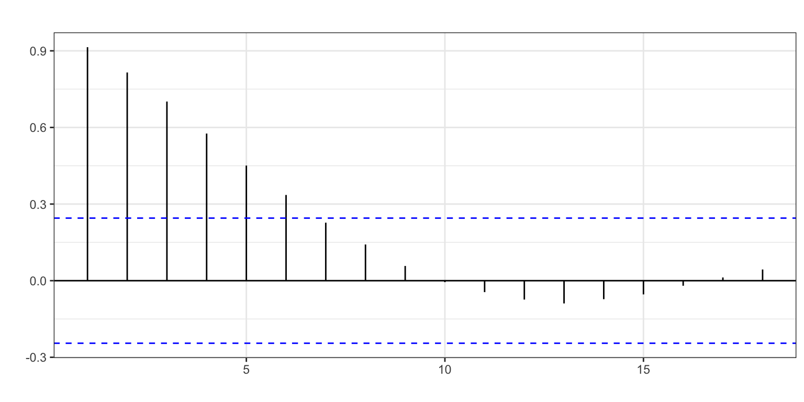
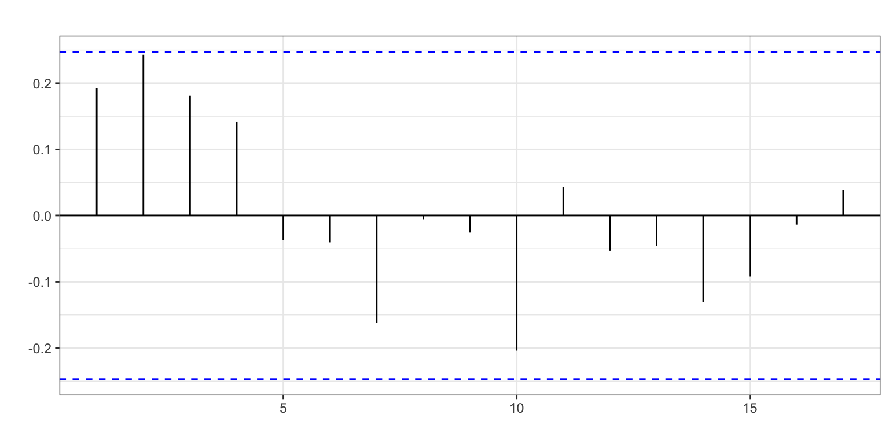
ndiffs(aforo)[1] 1Identificación y estimación
Veamos ahora a identificar los valores de \(p\) y \(q\) a partir de la FAC y la FACP, que se muestran en la Figura 13. Ni para la FAC ni para la FACP se observan coeficientes fuera del intervalo de confianza (líneas azules de las gráficas). Podría tratarse de un proceso ARIMA(0, 1, 0).
ggtsdisplay(diff(aforo))
¿Qué recomienda auto.arima?
auto.arima(aforo,
d = 1)Series: aforo
ARIMA(0,1,0)
sigma^2 = 1019660: log likelihood = -533.53
AIC=1069.06 AICc=1069.13 BIC=1071.22Sugiere un proceso ARIMA(0,1,0). Vamos a ver la gráfica de los residuos del modelo para identificar los valores extremos (intervención).
arima010 <- Arima(aforo,
order = c(0, 1, 0),
include.constant = FALSE)
error <- residuals(arima010)
sderror <- sd(error)
autoplot(error, series="Error",
colour = "black",
xlab = "",
ylab = "Error",
main = "") +
geom_hline(yintercept = c(-3, -2, 2, 3)*sderror,
colour = c("red", "green", "green", "red"),
lty = 2) +
geom_point() +
scale_x_continuous(breaks= seq(1960, 2024, 4))
fechas <- format(seq(as.Date("1960-01-01"), as.Date("2024-01-01"), "year"), "%Y")
fechas[abs(error) > 2.8 * sderror][1] "2011" "2020"
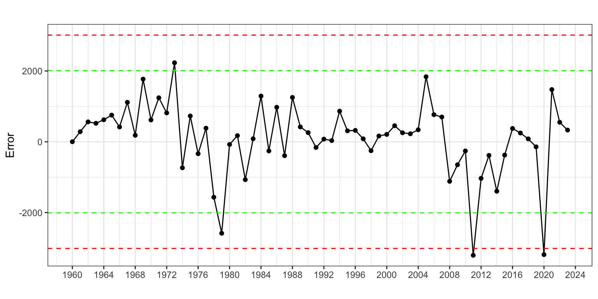
Se identifican dos años atípicos, dos intervenciones, porque los errores supera las 3 desviaciones típicas, uno en el año 2011, relacionado con la Gran Recesión, y otro en 2020. Además, se observa otro potencial año atípico en 1979 (supera las 2.5 desviaciones típicas) ya identificado con el método de Alisado. Cada una de las intervenciones es del tipo pulso porque solo afecta un periodo de la serie y tienen causas identificadas.
Ahora, creamos una variable ficticia asociada a cada intervención, que denominaremos d1979, d2011 y d2020. La forma de definir la variable ficticia asociada a un pulso consiste en crear una variable de ceros, excepto para el periodo atípico en que la variable valdrá 1.
d1979 <- 1*(fechas == 1979)
d2011 <- 1*(fechas == 2011)
d2020 <- 1*(fechas == 2020)Por último, incluimos las tres variables ficticias en la autoidentificación.
auto.arima(aforo,
d = 1,
xreg = cbind(d1979, d2011, d2020))Series: aforo
Regression with ARIMA(2,1,0) errors
Coefficients:
ar1 ar2 d1979 d2011 d2020
0.2023 0.4119 -1670.8067 -1188.599 -2369.1885
s.e. 0.1171 0.1201 494.4281 458.598 459.5709
sigma^2 = 604969: log likelihood = -514.47
AIC=1040.94 AICc=1042.42 BIC=1053.9Observa como la inclusión de intervención modifica la autoidentificación, que ahora es un proceso ARIMA(2, 1, 0).
arima210 <- Arima(aforo,
order = c(2, 1, 0),
include.constant = FALSE,
xreg = cbind(d1979, d2011, d2020))
arima210Series: aforo
Regression with ARIMA(2,1,0) errors
Coefficients:
ar1 ar2 d1979 d2011 d2020
0.2023 0.4119 -1670.8067 -1188.599 -2369.1885
s.e. 0.1171 0.1201 494.4281 458.598 459.5709
sigma^2 = 604969: log likelihood = -514.47
AIC=1040.94 AICc=1042.42 BIC=1053.9Todos los coeficientes estimados, excepto el ar1 (\(\phi_1\)), superan las dos desviaciones estándar y parece que son significativos.
La Figura 15 muestra que para ningún año se observa un error atípico. Es decir, no es necesaria más intervención.
error <- residuals(arima210)
sderror <- sd(error)
autoplot(error, series="Error",
colour = "black",
xlab = "",
ylab = "Error",
main = "") +
geom_hline(yintercept = c(-3, -2, 2, 3)*sderror,
colour = c("red", "green", "green", "red"),
lty = 2) +
geom_point() +
scale_x_continuous(breaks= seq(1960, 2024, 4)) 
Validación
Variables significativas
La identificación de errores atípicos —para la posterior inclusión de sus variables de intervención asociadas— ha sido un tanto arbitraria: ¿es atípico el error que supera las 2 desviaciones típicas, las dos y media, las tres desviaciones típicas?
De nuevo, podemos contrastar si sus coeficientes son significativos y dejar solo aquellas variables de intervención cuyos coeficientes lo sean. Aunque si la serie es suficientemente larga, también podríamos saltarnos este paso y dejar las variables de intervención que mejoren las predicciones extramuestrales del modelo o las que recojan efectos conocidos.
Veamos qué coeficientes estimados son significativos.
coeftest(arima210)
z test of coefficients:
Estimate Std. Error z value Pr(>|z|)
ar1 0.20233 0.11712 1.7275 0.0840715 .
ar2 0.41193 0.12011 3.4295 0.0006047 ***
d1979 -1670.80671 494.42812 -3.3793 0.0007268 ***
d2011 -1188.59914 458.59796 -2.5918 0.0095472 **
d2020 -2369.18850 459.57086 -5.1552 2.533e-07 ***
---
Signif. codes: 0 '***' 0.001 '**' 0.01 '*' 0.05 '.' 0.1 ' ' 1Las tres variables de intervención son significativas y el coeficiente \(\phi_2\) (ar2) también. No es significativo el coeficiente \(\phi_1\) (ar1) al 5% pero si al 10%. En cualquier caso, los modelos Arima son modelos jerárquicos donde la presencia de un coeficiente –autorregresivo o de media móvil– significativo de cierto orden exige que los coeficiente de orden inferior estén presentes, sean o no significativos. En nuestro caso, como el coeficiente \(\phi_2\) es significativo, se debe dejar en el modelo el coeficiente \(\phi_1\).
Medidas de bondad del ajuste
El error medio es 741 vehículos por día (RMSE) y el error porcentual medio (MAPE) es 6%. No hay sesgo de predicción y la fórmula empleada para el cálculo del intervalo de confianza de las predicciones es válida.
accuracy(arima210) ME RMSE MAE MPE MAPE MASE ACF1
Training set 57.17 741.03 552.44 1.3 5.98 0.76 0.05
Incorrelación, Homocedasticidad y Normalidad de los residuos
Veamos ahora si el residuo es ruido blanco:
Box.test(error, lag = 2, type = "Ljung-Box")
Box-Ljung test
data: error
X-squared = 0.27509, df = 2, p-value = 0.8715Box.test(error^2, lag = 2, type = "Ljung-Box")
Box-Ljung test
data: error^2
X-squared = 2.252, df = 2, p-value = 0.3243jarque.bera.test(error)
Jarque Bera Test
data: error
X-squared = 1.5694, df = 2, p-value = 0.4562Las hipótesis de incorrelación y homocedasticidad se aceptan. También se aceptarían para otros valores de \(k\) razonables. Igualmente, se acepta la hipótesis de normalidad.
Interpretación del modelo
Hemos validado y estimado el modelo \(aforo_t \sim ARIMA(2,1,0) + AI\). En concreto tenemos que el modelo teórico es:
\[(1 - \phi_1 L - \phi_2 L^2)(1 - L)aforo_t = \varepsilon_t + \gamma_1 \cdot d1979 + \gamma_2 \cdot d2011 + \gamma_3 \cdot d2020.\]
Si desarrollamos, queda:
\[aforo_t = aforo_{t-1} + \phi_1(aforo_{t-1}-aforo_{t-2}) + \phi_2(aforo_{t-2}-aforo_{t-3}) +\] \[\gamma_1 \cdot d1979 + \gamma_2 \cdot d2011 + \gamma_3 \cdot d2020 + \varepsilon_t.\]
Finalmente, el modelo estimado es: \[\widehat{aforo}_t = aforo_{t-1} + 0.20(aforo_{t-1}-aforo_{t-2}) + 0.41(aforo_{t-2}-aforo_{t-3})\] \[-1671 \cdot d1979 - 1189 \cdot d2011 - 2369 \cdot d2020\]
Cada año el aforo es el mismo que el aforo del año pasado más un 20% del último incremento observado y un 41% del incremento anterior.
Respecto de la intervención, en 1979 se redujo el aforo en 1700 vehículos por día respecto de lo esperado debido a la apertura de la autopista AP-7; en 2011 aumentó el aforo en 1200 vehículos por día debido a la Gran Recesión; y en 2020 las restricciones de movilidad debidas a la pandemia redujeron el aforo en 2400 vehículos al día.
Predicción
Como hemos incluido tres variables ficticias en el ajuste, de cara a predecir el aforo hemos de indicar cuáles serán los valores futuros para estas variables. En este caso serán cero puesto que son intervenciones que no responden a un efecto calendario. Las causas detrás de estas intervenciones no se espera que se repitan en el futuro.
Ya hemos visto que para ello se incluye en el comando forecast el argumento xreg = cbind(rep(0, 4), rep(0, 4), rep(0, 4)) que añade cinco ceros por cada variable de intervención porque la predicción va a ser a cinco años vista.
parima210 <- forecast(arima210,
h = 4,
level = 95,
xreg = cbind(d1979=rep(0, 4), d2011=rep(0, 4),
d2020=rep(0, 4)))
parima210 Point Forecast Lo 95 Hi 95
2025 10078.48 8554.022 11602.93
2026 10520.44 8136.436 12904.44
2027 10742.28 7270.924 14213.64
2028 10969.22 6515.638 15422.81Para 2025 se espera un paso de 10078 vehículos al día por la N-340 a la altura de Oropesa.
autoplot(parima210,
xlab = "",
ylab = "Vehículos diarios",
main = "") +
scale_x_continuous(breaks= seq(1960, 2028, 4)) 
Validación con origen de predicción móvil
Vamos a calcular el error extramuestral según el horizonte temporal de previsión. Asumiremos que se precisan 30 años para estimar el modelo, fijaremos el horizonte temporal en 4 años y calcularemos el error MedAPE, para evitar el efecto de los años atípicos.
k <- 30
h <- 4
T <- length(aforo)
s <- T - k - h
mapeArima <- matrix(NA, s + 1, h)
for (i in 0:s) {
train.set <- subset(aforo, start = i + 1, end = i + k)
test.set <- subset(aforo, start = i + k + 1, end = i + k + h)
fit <- Arima(train.set,
include.constant = FALSE,
order = c(2, 1, 0))
fcast <- forecast(fit, h = h)
mapeArima[i + 1,] <- 100*abs(test.set - fcast$mean)/test.set
}
mapeArima <- apply(mapeArima, MARGIN = 2, FUN = median)
mapeArima[1] 2.075815 6.455624 10.646505 12.474715El error de previsión extramuestral crece notablemente con el horizonte temporal. El error de las previsiones a un año vista es del 2%, muy inferior al error intramuestral del 6% por ser un error mediano, pero para tres años vista alcanza el 10%.
6.3 Consumo de alimentos en el hogar per cápita
Analizaremos el consumo alimentario en hogar per cápita en España. Esta serie está construida a partir de la serie de consumo alimentario en hogar (disponible en el Ministerio de Agricultura, Alimentación y Medio Ambiente), y la serie de población (disponible en el Instituto Nacional de Estadística). Es una serie anual de 1990 a 2024 (35 datos) y la unidad es el Kg per cápita. La Figura 17 muestra que es una serie estacionaria.
alimentospc <- read.csv2("./series/Alimentacionpc.csv",
header = TRUE)
alimentospc <- ts(alimentospc,
start = 1990,
freq = 1)
autoplot(alimentospc,
xlab = "",
ylab = "Kg per cápita",
main = "",
ylim = c(0, 700))
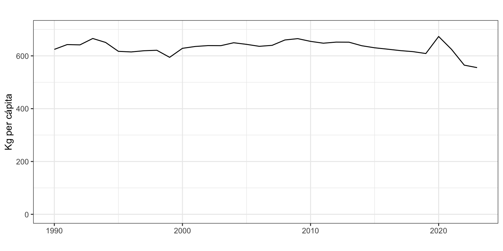
El pico en el año 2020 se debe al aumento del consumo de alimentos en el hogar causado por el periodo de confinamiento por la Covid-19 (marzo a junio) y el aumento del trabajo desde casa. La aparente caída desde 2022 se debe a que como efecto rebote, los españoles ahora comemos y cenamos más fuera del hogar.2
Transformación de la serie
La gráfica de la serie original y su FAC (véase la Figura 17 y la Figura 18) indican que la serie original ya es estacionaria y la función ndiffs lo corrobora. Por tanto asumimos que \(d=0\) o \(alimentospc_t \sim I(0)\).
ggAcf(alimentospc, xlab = "", ylab = "", main = "")
ndiffs(alimentospc)[1] 0Identificación y Estimación
Gráficamente hemos observado posibles intervenciones, en los años 2020, 2022 y 2023. Vamos a incorporar esta información en auto.arima para obtener una identificación mejor.
Creamos una variable ficticia asociada a la intervención de 2020 cuya causa es el aumento del consumo de alimentos en el hogar durante el confinamiento y solo afecta un año (pulso). La forma de definir la variable ficticia asociada a un pulso consiste en crear una variable de ceros, excepto para el año atípico en que la variable valdrá 1. Denominaremos a esta variable ficticia d2020.
La intervención de 2022 se debe a la caída en el consumo de alimentos en el hogar debida al incremento del ocio, pero a diferencia de la anterior intervención, esta caída se ha mantenido durante los años siguientes, tomando forma de cambio permanente (level shift). La forma de definir la variable ficticia asociada a un cambio permanente consiste en crear una variable de ceros, excepto para el periodo de años atípicos en que la variable valdrá 1. Denominaremos a la variable ficticia asociada l2022.
fechas <- format(seq(as.Date("1990-01-01"), as.Date("2024-01-01"), "year"), "%Y")
d2020 <- 1 * (fechas == 2020)
l2022 <- 1 * (fechas > 2021)Por último, incluimos las dos variables ficticias en la autoidentificación.
auto.arima(alimentospc,
d = 0,
xreg = cbind(d2020, l2022))Series: alimentospc
Regression with ARIMA(1,0,0) errors
Coefficients:
ar1 intercept d2020 l2022
0.6834 632.7882 55.3717 -69.7211
s.e. 0.1250 6.2452 9.8367 11.5582
sigma^2 = 158.1: log likelihood = -136.46
AIC=282.92 AICc=284.99 BIC=290.7La identificación automática sugiere un proceso AR(1) con constante (intercept) por ser el que menor AICc tiene. Por tanto, ha estimado los coeficientes \(\phi_1\) y \(\mu\) (que denomina ar1 e intercept) y los coeficientes de la intervención para d2020 y l2022. Todos los coeficientes parecen significativos.
Ahora vamos a estimar el modelo identificado. El análisis gráfico (Figura 19) y numérico de los residuos de este proceso no detecta más valores extremos.
arima100 <- Arima(alimentospc,
order = c(1, 0, 0),
include.constant = TRUE,
xreg = cbind(d2020, l2022))
arima100Series: alimentospc
Regression with ARIMA(1,0,0) errors
Coefficients:
ar1 intercept d2020 l2022
0.6834 632.7882 55.3717 -69.7211
s.e. 0.1250 6.2452 9.8367 11.5582
sigma^2 = 158.1: log likelihood = -136.46
AIC=282.92 AICc=284.99 BIC=290.7error <- residuals(arima100)
sderror <- sd(error)
autoplot(error, series="Error",
colour = "black",
xlab = "",
ylab = "Error",
main = "") +
geom_hline(yintercept = c(-3, -2, 2, 3)*sderror,
colour = c("red", "green", "green", "red"),
lty = 2) +
geom_point() +
scale_x_continuous(breaks= seq(1990, 2024, 4))
fechas[abs(error) > 2.8 * sderror]character(0)
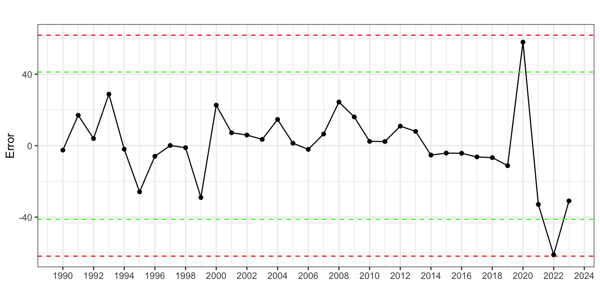
Si rebajamos el número de desviaciones estándar de 2.8 a 2.5, aparece otro valor extremo en 1999, con un consumo inferior al esperado. Sin embargo, para este año no se identifica ninguna razón para la caída del consumo por lo que damos el modelo previo como definitivo. Toda intervención debe tener detrás una causa identificable; si no, puede ser fruto del simple azar.
Validación
Coeficientes significativos
Tanto \(\phi_1\) como el intercepto \(\mu\) y las variables de intervención son significativas.
coeftest(arima100)
z test of coefficients:
Estimate Std. Error z value Pr(>|z|)
ar1 0.68338 0.12495 5.4692 4.521e-08 ***
intercept 632.78823 6.24524 101.3233 < 2.2e-16 ***
d2020 55.37173 9.83670 5.6291 1.812e-08 ***
l2022 -69.72109 11.55823 -6.0322 1.618e-09 ***
---
Signif. codes: 0 '***' 0.001 '**' 0.01 '*' 0.05 '.' 0.1 ' ' 1
Medidas de bondad del ajuste
La precisión del ajuste es 11.8 kg per cápita (RMSE) y el error porcentual medio (MAPE) es 1.4%. No hay sesgo y los intervalos de confianza de las predicciones los vamos a considerar correctos.
accuracy(arima100) ME RMSE MAE MPE MAPE MASE ACF1
Training set 0.22 11.83 8.65 -0.01 1.38 0.62 0.1
Incorrelación, Homocedasticidad y Normalidad del residuo
Veamos ahora si el residuo es ruido blanco:
error <- residuals(arima100)
Box.test(error, lag = 2, type = "Ljung-Box")
Box-Ljung test
data: error
X-squared = 0.60162, df = 2, p-value = 0.7402Box.test(error^2, lag = 2, type = "Ljung-Box")
Box-Ljung test
data: error^2
X-squared = 0.26066, df = 2, p-value = 0.8778shapiro.test(error)
Shapiro-Wilk normality test
data: error
W = 0.94782, p-value = 0.09709Las hipótesis de incorrelación y homocedasticidad se aceptan. También se aceptarían para otros valores de \(k\) razonables. La hipótesis de normalidad también se acepta al 5%.
Interpretación del modelo
El modelo teórico identificado es \[(1 - \phi_1 L) alimentospc_t = c + \gamma_1 d2020 + \gamma_2 l2022 + \varepsilon_t,\] que desarrollando queda \[alimentospc_t = c + \phi_1 alimentospc_{t-1} + \gamma_1 d2020 + \gamma_2 l2022 + \varepsilon_t.\]
Finalmente, el modelo estimado es \[\widehat{alimentospc}_t = 200.4 + 0.68 \cdot alimentospc_{t-1} +\] \[55.4\cdot d2020 - 69.7\cdot l2022.\]
La constante del modelo teórico y la media del modelo estimado
El término constante \(\mu\) que estima R no es el valor “c” que hemos visto en la teoría. Para convertir la constante estimada por R en “c” hemos de multiplicarla por el polinomio autorregresivo. En este caso, \[c = (1 - \phi_1)\cdot \mu = (1 - 0.68338) \cdot 632.78823 = 200.3534\]
Cada año el consumo de alimentos per cápita en el hogar es 200 kilos más un 68% del consumo del año pasado.
En 2020, debido al efecto combinado del periodo de confinamiento entre marzo y junio y el incremento del trabajo en casa, se produjo un fuerte aumento del consumo de alimentos en el hogar, estimado en 55 kg per cápita. Por el contrario, a partir de 2022 se redujo el consumo de forma permanente en unos en 70 kg, por el aumento del ocio.
Predicciones de la serie
Como hemos incluido dos variables ficticias en el ajuste, de cara a predecir el consumo de alimentos hemos de indicar cuáles serán los valores futuros para estas variables. No cabe esperar otro periodo de confinamiento en los próximos años, así que podemos fijar a 0 los valores futuros de d2020. Sin embargo, hemos asumido que el consumo de alimentos en el hogar ha caído de forma permanente desde 2022, así que debemos fijar a 1 los valores futuros de l2022.
En R esto se hace incluyendo en el comando forecast el argumento xreg = cbind(rep(0, 5), rep(1, 5)) que añade cinco ceros para la primera variable de intervención y cinco unos para la segunda porque la predicción va a ser a cinco años vista.
parima100 <- forecast(arima100,
h = 5,
level = 95,
xreg = cbind(rep(0, 5), rep(1, 5)))
parima100 Point Forecast Lo 95 Hi 95
2025 553.8475 529.2034 578.4917
2026 556.7666 526.9175 586.6157
2027 558.7615 526.7704 590.7525
2028 560.1247 527.1810 593.0684
2029 561.0563 527.6770 594.4356Podemos ver gráficamente las predicciones (véase la Figura 20).
autoplot(parima100,
series = "Alimentos",
xlab = "",
ylab = "Kg per cápita",
main = "",
PI = FALSE,
ylim = c(0, 700))
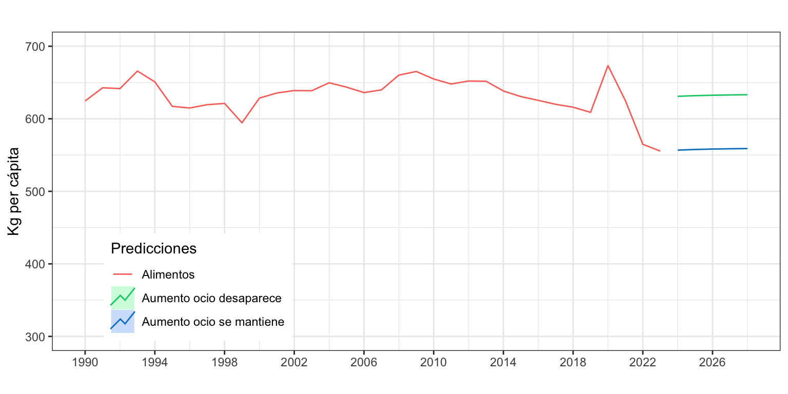
Validación con origen de predicción móvil
Vamos a calcular el error extramuestral según el horizonte temporal de previsión. Asumiremos que se precisan 20 años para estimar el modelo, fijaremos el horizonte temporal en 2 años y calcularemos el error MedAPE, para evitar el efecto de los años atípicos.
k <- 20
h <- 2
T <- length(alimentospc)
s <- T - k - h
mapeArima <- matrix(NA, s + 1, h)
for (i in 0:s) {
train.set <- subset(alimentospc, start = i + 1, end = i + k)
test.set <- subset(alimentospc, start = i + k + 1, end = i + k + h)
fit <- Arima(train.set,
include.constant = TRUE,
order = c(1, 0, 0))
fcast <- forecast(fit, h = h)
mapeArima[i + 1,] <- 100*abs(test.set - fcast$mean)/test.set
}
mapeArima <- apply(mapeArima, MARGIN = 2, FUN = median)
mapeArima[1] 1.401493 2.181278El error de previsión extramuestral a un año vista es similar al error de ajuste y el error a dos años vista se mantiene notablemente bajo.
6.4 Comparación con alisado exponencial
Veamos una comparativa, para los tres ejemplos vistos, entre los resultados obtenidos con ARIMA y con Alisado exponencial.
- Residuos:
MAPE ARIMA: \(2.54\%\) - ARIMA(1,1,0) sin deriva
MAPE ETS: \(2.77\%\) - ETS(M,A,N), \(\alpha=1\), \(\beta = 0.45\)
Ambos métodos presentan similar calidad de ajuste.
- Aforo:
MAPE ARIMA: \(5.98\%\) - ARIMA(2,1,0) sin deriva, con intervención
MAPE ETS: \(7.00\%\) - ETS(M,A,N), \(\alpha=0.97\), \(\beta=0.03\)
ARIMA tiene menor error al incluir tres variables de intervención
- Alimentos per cápita:
MAPE ARIMA: \(1.38\%\) - ARIMA(1,0,0) con constante e intervención
MAPE ETS: \(2.21\%\) - ETS(A,N,N), \(\alpha = 0.96\)
ARIMA tiene menor error menor y permite capturar la caída del consumo de alimentos en el hogar tras la pandemia
7 Resumen de los comandos utilizados
| Función | Paquete | Descripción |
|---|---|---|
arima.sim |
stats | genera una simulación de un proceso ARIMA |
Arima |
forecast | estima un proceso ARIMA |
auto.arima |
forecast | identificación automática de un modelo ARIMA |
coeftest |
lmtest | contrasta la significatividad individual de los parámetros de un modelo |
Box.test |
stats | prueba de independencia de una serie temporal |
shapiro.test |
stats | prueba de normalidad de Shapiro-Wilks |
jarque.bera.test |
tseries | prueba de normalidad de Jarque-Bera |
References
Box, G. E. P., and G. M. Jenkins. 1976. Time Series Analysis: Forecasting and Control. Holden-Day, San Francisco.
Footnotes
Mira en la ayuda de la función
Arimala diferencia entre los argumentosinclude.mean,include.drifteinclude.constant↩︎Según el INE, el gasto monetarios per cápita de los españoles en restauración y hoteles cayó ligeramente en 2018 y 2019, y retrocedió un 40% en 2020 a causa de la pandemia. Desde entonces, el gasto per cápita en esta partida ha crecido año tras año: un 30.7% en el 2021 y 2022 y un 13.6% en el 2023.↩︎